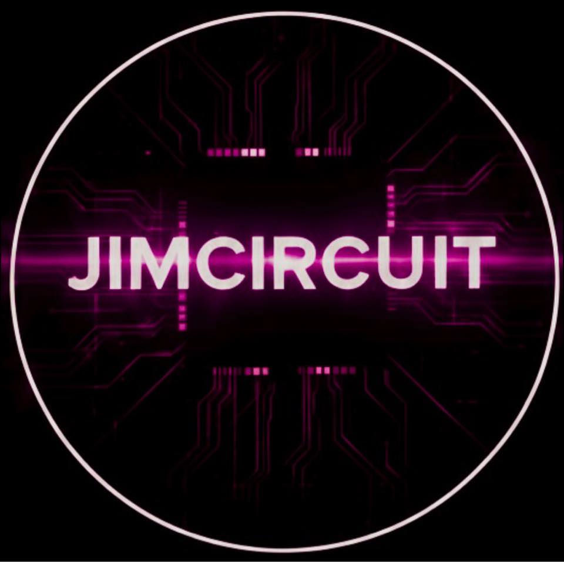

Loading…
Welcome to JimCircuit OS (GNU/Linux)
* Education: systems, networking, how data moves
* Status: online
Type help to see commands.

JIMCIRCUIT
Messing around with the internet and how it moves.
whoami
JimCircuit
cat ~/profiel.txt
cat: /home/jimcircuit/profiel.txt: No such file or directory
cat ~/profile.txt
Category: Education
Bio: Messing around with the internet and how it moves.
Focus: networking • systems • I/O • protocols
ls -lt | head
Networking: how packets move, routing, DNS, TCP/UDP, and troubleshooting.
Loading posts…
cat README.md
Systems: Linux/Unix internals, permissions, processes, I/O, filesystems, and security basics.
Loading posts…
grep -R "RFC" ./notes | head
Protocols: TCP/IP, HTTP, TLS, DNS, and the rules-of-the-road between machines.
Loading posts…
cat ~/about.md
JimCircuit is an education-focused space for learning how the internet actually works: packets, protocols, operating systems, and the plumbing that makes everything move.
Expect bite-size breakdowns, experiments, and “why does this behave like that?” deep dives—written like terminal notes you can actually reuse.
Want a topic covered? Drop a comment on YouTube or message me on Instagram.
ls | head
ls -lt ~/blog | head
Notes: short write-ups that go with my videos.
Loading posts…